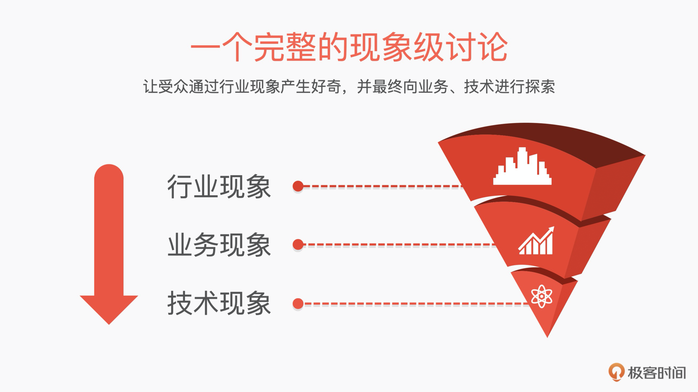
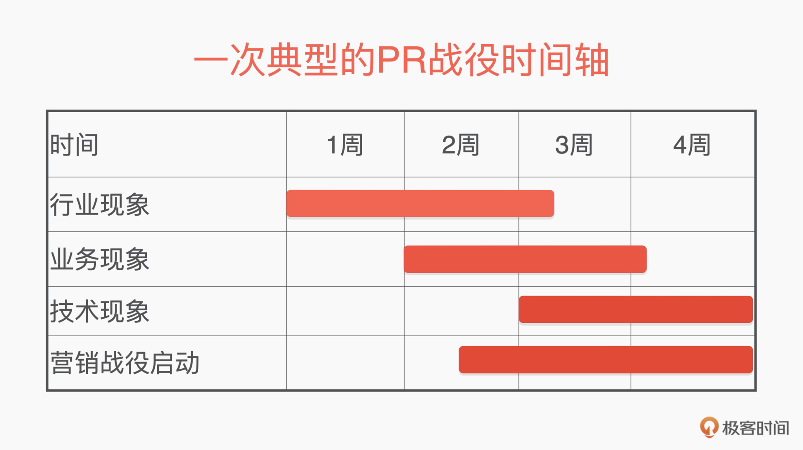

- 00 开篇词 成为下一个万亿市场风口上的操盘人.md.html
- 01 To B市场营销到底是做什么的？.md.html
- 02 To B消费心理学：如何把握客户CEO心理，让他买单？.md.html
- 03 第一印象（上）：如何策划一场产品发布会？.md.html
- 04 第一印象（下）：如何策划一场产品发布会？.md.html
- 05 Leads：如何成体系地寻找高质量的Leads？.md.html
- 06 案例：怎样0成本把一个新产品的市场认知率做到百分之76？.md.html
- 07 产品世界观：如何构建一个好的对外产品故事体系？.md.html
- 08 口碑：如何打造一个有影响力的Demo？.md.html
- 09 后疫情时代，如何做To B市场品牌内容的线上转型？.md.html
- 10 如何用“周边”产品构建To B影响力？.md.html
- 11 打造案例（上）：如何做优质客户案例的选型和内容构造？.md.html
- 12 打造案例（中）：如何引发现象级讨论，打赢PR战役？.md.html
- 13 打造案例（下）：如何通过营销战役把商机转化为销量？.md.html
- 14 颜值美学：如何体现To B产品营销的设计感？.md.html
- 15 如何给企业讲一个“降本”的故事？.md.html
- 16 如何给企业讲一个“增效”的故事？.md.html
- 17 市场中的禁忌：To B营销中容易犯哪些错误？.md.html
- 18 To B营销的阵地：我们在哪里说话，也很重要.md.html
- To B会客厅 SDR是如何优化线索跟进策略，提升销售效能的？.md.html
- To B会客厅 如何通过整体营销迎接后疫情时代的市场挑战？.md.html
- 结束语 一个To B的市场人应该具备怎样的特质？.md.html
- 捐赠
12 打造案例（中）：如何引发现象级讨论，打赢PR战役？
你好，我是曹林。今天我们继续来探讨如何打造客户案例。
上一节课中我们讲了一个案例应有的内核，包括案例选型的五条标准划线，以及如何通过FAQ来提炼案例要点。但仅仅把案例内核打造完还不够，我们还要对外输出案例，最终实现商业价值。要想做到这一步，我们就要打赢两场战役：“心智战役”和“营销战役”，心智之战决定了用户是不是认为你这个产品是值得我购买的，而营销战役则是临门一脚，把商机转化成了销量。
这一节课，我们就来讲讲“心智战役”。什么叫“心智战役”？其实就是打造一场现象级的PR，输出我们的案例。所以，这节课我们就围绕“如何发起现象级的PR”这个问题，来讨论如何进行案例输出。
PR战役：发起现象级讨论
有了案例选型方法、FAQ内容搭建法后，我们的内容公关（Public Relations，以下简称PR）战役就可以打响了。
PR战役的核心目的是要发起现象级的讨论。而从我的经验来看，一个完整的现象级讨论一定是从行业现象、业务现象、技术现象往下落的。这样由大到小，层层剥茧抽丝，有利于大家从现象产生好奇，向业务、技术进行探索。

接下来我们逐一看看该如何推动这些现象发生。
我们还是以上一节课中提到的“极客时间视频会议版”这个虚拟案例为例来进行说明，针对这个案例，我们要打造的一件事，就是：“无办公室时代”来了，极客时间视频会议版因为成功运用了极客云的GPU、AI技术，得到了爆发式的发展。
一般情况下，整个现象讨论的周期，大概在1个月左右，这也是我们通常进行To B的市场活动的一个周期。如果你的节奏太长，很容易出现各个合作部门看不到结果，导致项目难以推进的情况。

另外，营销战役要借助PR的影响力展开。所以，当PR战役进行到业务层的时候，营销战役就应该同时发起了。你会发现这个时候，你宣传的是业务层的事件，同时售卖解决业务问题的产品，会很容易引发同频共振。
行业现象：让大家来讨论我们客户的成功
在财经和产经媒体上，行业现象发生的几率比较高，所以我们的案例一定要有大众话题。通常的几个选题方向有：增长、挑战者出现、颠覆过往、代表了新的趋势、八卦等。当然，最成功的还是成功效应，通过塑造客户成功，来证明我们产品的成功。
在我们的案例中，行业讨论通常会采用以下话题：
- “极客时间视频会议版三年冲刺百亿美金市值，做对了什么？”
- “极客时间视频会议版现象，线上视频会议的红海突围！”
- “人与人相隔千里，极客时间视频会议版的逆袭。”
如果你能结合当下的时事、新闻、关注点，那收到的效果会更好。根据这一点，我们把刚刚的话题再稍做修改，就可以得到这样的话题：
- “后新冠时代线上会议成为主流，极客时间视频会议版会成为行业老大吗？”
- “见面开会不再是主流了？疫情后的办公行为分析。”
看出来了吗？这些话题是要把技术的讨论上升到业务讨论，再从业务讨论上升到社会现象、社会趋势讨论，同时又把业务的讨论下沉到技术红利的讨论。那具体我们该如何操作呢？
通常在这个阶段，我们可以围绕社会、行业、泛科技这三条线来做物料。
一个主流行业现象的讨论周期不宜太长，两周左右即可。在两周的时间里，我们要打出去的物料很多，但是声音一定是围绕前面我们讨论的话题进行的。这里会用到的典型物料包括：一篇主流媒体的趋势稿、2～3篇观点类稿件、3～4篇泛科技类讨论稿件、1～2次联合发声。如果还有余力和预算，也可以做一些视频物料。
主流媒体趋势稿的核心是带动整个风向，观点要“新、奇、特”，要有数据论证，要有趋势分析和对未来的洞察，以及专家观点。这篇稿子代表了你接下来要打的整个观点，我们也称之为定调稿。套到教学案例中，我们可以推《这届公司，已经没有会议室了》，把“没有会议室”“不在线下开会”这样简单的洞察，变成一个事件、一个趋势。
观点类稿件的目的是以现象带动讨论，会面向财经、产经媒体投放行业趋势，大胆预测，建立推论。它的目的是佐证和辅助前面趋势稿的关键信息。例如，我们可以推《“不开会”背后的云经济学》，通过分析极客时间视频会议版的客户、商业模式、营收构成、在短时间内突然爆发的情况和用户暴涨等现象，得出结论：云技术给他们带来的低成本、高弹性的IT能力，是帮助视频会议行业快速发展的重要动力之一。
推泛科技类讨论稿件的目的是大众心中建立简单的“业务→技术”初步印象，我们还可以在这一步围绕“企业神话”打造一系列简单的印象认知类短视频。例如，《极客时间视频会议版，百亿美金企业背后不是男人和女人，而是这朵云》《极客时间视频会议版，还有什么黑科技？》，通过刚刚我上面提到的选题方向，快速博眼球、带动认知。
同时，我们还要在主流的论坛&行业峰会上，安排1～2次联合发声，探讨极客时间视频会议版这一现象。
视频物料不是必备选项，其实就是对上述观点进行了拆分，目的是进一步降低受众的理解门槛。在案例中，我们可以拍些抖音短视频，比如：《你理解的开会，极客时间视频会议版理解的开会》《如何在肯德基开会开出商务感？》《小姐姐在线开会，打造高颜值的人工智能》。
通过社会、行业、泛科技三条媒体线进行物料投放，很快就会产生出热度讨论。社会类一般可以选择央媒、地方媒体造势；行业类可以选择一些企业家爱看的渠道，例如财经、财新、中国新闻周刊、正和岛等类的；泛科技类可选的包括虎嗅、36氪、钛媒体等。
营造这样的讨论，是为了围猎CEO的关注，启发他们思考。一个好的CEO就像鲨鱼，一旦闻到机会的味道，他了解内容的欲望绝对比你想的要更强。
业务现象：让大家洞察我们客户成功背后的极客云
在行业现象发生以后，CEO们的好奇心一定会从“成功的现象”，转到“为什么成功，有什么值得我学习的地方”。所以这个时候，你要牵引舆论进入业务讨论的阶段，趁热打铁，把案例企业迅速成功的方法论收敛到我们要讨论的核心业务上去。这个时间周期通常和行业现象有一周左右的投放重叠，一般来说以两周为一个周期比较好。
客户的成功，一定是自身业务的成功，在这里我们一定要克制收敛，只谈技术助力，千万不要越界到我们推动客户成功。
在业务现象中，我们的工作重点是给人们建立业务心智。在这个例子中的表现就是：AI是极客时间视频会议版成功的一个重要的原因。以极客时间视频会议版为例，到了第二阶段的业务讨论时，我们就要相对真诚地、坦率地沟通，聚拢业务。这时我们的物料应该谈方向、谈体验、谈未来，我们可以通过业务方、终端客户、行业专家的反馈进行物料的准备。
典型的物料包括一篇客户访谈，一篇对客户的终端用户的访谈，2～3篇业内学者、行业专家的方向性访谈。
客户访谈讲的是“业务方怎么看”的问题。我们可以邀请极客时间视频会议版CEO，谈谈消费者对我们AI技术的喜爱，并把会议系统中的人工智能定义为核心竞争力。对外可以输出这样的物料稿件：《极客时间视频会议版：AI是我们的核心竞争力》。
对客户终端客户的访谈内容就要围绕着“对方的终端客户获得了什么好处”。我们可以邀请对方的终端客户谈体验中的惊喜，比如，在极客时间视频会议版中感受到的换装体验，以及基于极客云的自动化会议记录，是如何帮助他节约时间的。
准备业内学者、专家的访谈主要是为了通过学者的断言充分肯定业务方向，比如：“没有人工智能加持的视频会议系统，是1.0时代；极客时间视频会议版人工智能加持的视频会议系统，是2.0的启幕”等断代宣言。
技术现象：极客时间视频会议版在极客云下的最佳实践
到了第三阶段，我们就需要技术和解决方案出场，并向全行业推广，作为商业企业，我们希望帮助我们的客户极客时间视频会议版成功。但是我们最终的目的，是通过极客时间视频会议版这个案例，推动我们更多的客户，购买我们极客云的AI和云计算实践。
所以这个时候，我们的案例要佐证一件事：极客云的产品是最适合视频会议版的云（包括架构的优势、技术的优势、性价比等）。
如果说上面的两个现象都是针对行业CEO来进行的，那么接下来我们的战斗目标就要转向行业里的CTO了。现在，我们就要以极客时间视频会议版为案例，来讲一个行业的技术故事。
在技术现象阶段，我们就要不断地从个案的选择，走向行业中的典型场景。这一阶段的物料主要有三种。
第一种，谈极客时间视频会议版本身技术选型的最佳实践类稿件，通常我们会围绕云的弹性能力、高效运维、业务创新这三个维度来看。
围绕弹性能力进行讲解的话，我们可以用《10天，极客云助力的极客时间视频会议版最火的AI业务如何在疫情期间快速上线》。围绕高效运维进行阐述的话，我们可以用《1个运维工程师，解决了全世界的视频会议智能转写》。围绕业务创新时，我们则可以用《全民换装：极客时间视频会议版是如何通过混合云实现最低成本的视频智能的？》这类内容。
第二种，谈音视频行业架构通用技术选型的最佳实践物料，主要目的是展现业务全貌、展示云对企业的降本提效和未来趋势。
要展现业务架构全貌，我们可以用《视频会议行业的AI之路，基于极客云构建完整的AI能力》。想表现降本提效，我们可以写《视频会议行业成本居高不下，原因有哪些？》。要展现未来趋势，我们可以发《视频会议技术的五大发展趋势，你了解了吗？》。
第三种物料，是要收敛聚拢，形成定性心智，我们经常采用白皮书&案例视频的形式。这一步就是告诉受众，极客云是最适合音视频行业的云。比如，联合第三方分析机构发布《中国音视频行业上云白皮书》；或者发布讲行业特性的《智能、高清、弹性、安全，极客云在音视频行业受欢迎的4个关键词》；又或者用一个《极客云，从高清到智能之路》的视频，从时间线的维度看极客时间视频会议版的云上架构演变。
这个阶段的物料，大多数可以成为销售支撑材料本身。
总结
事实上很多同学在面向To B的转型中，碰到的最大的问题，不是专业技能的问题（办会、办展、办活动；投媒体、投广告、投渠道），而是我们如何去讲好一个专业故事的问题。也就是我们的内容应该如何构建？如何一层层抽丝剥茧地引发行业讨论？
那我们想要追求的最优方案，就是在To B的行业引发共鸣，在To T（技术圈）里获得共情，在TO C（公众圈）里获得共振。只有这样的方案才意味着，我们的整个市场投资，在传播这个板块是比较成功的。
一句话，在To B的传播中，我们心里的“内容底料”一定要清晰，然后在面对不同的群体时加以不同的沟通手段。即重复同一个观点，并用不同的材料证明它。
当这句话重复1000遍的时候，这就是这个行业的真理了。
场景练习
如果让你围绕社会、行业、泛科技，给自己的产品构建一个科技市场传播的内容，你会怎么布局？你会组织哪些讨论、观点、稿件？
欢迎在留言区写出你对案例打造的想法和问题，与其他同学相互讨论学习。如果你觉得有所收获，也欢迎你把这一讲分享给你的朋友。
© 2019 - 2023 Liangliang Lee. Powered by gin and hexo-theme-book.